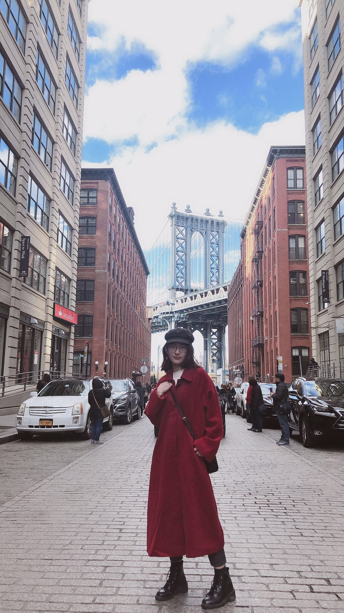

This website is built to present the analysis of movies. We go through all the subtitles of Top50 box office sale movies in 2019 to explore the words frequency and using words sentiment analysis to further analyze the emotional meaning of words, determining whether there is a trend of movie’s topic and genre in film production nowadays. We pay attention to important geographic location to see how popular those countries or states are in films. Aware of how general play roles in the culture expression of movie by years, we are interesting in words wight, words choice, and the genre of movies for different gender for the Movies in Cornell Film Festival.
WEB DEVELOPER
My name is Miranda Li and I am a sophomore studying Mathematics & Computer Science at the University of Illinois at Urbana-Champaign. I am interested in full stack software development. My goal is to become a frontend or backend software developer. For this project, I designed and created this website to display all our analyses using HTML, CSS and BootStrap. This is the first time I built a website from scratch and it has taught me a lot about designing, testing and making a full working website.
DATA ANALYST
My name is Yash Patel and I am a junior majoring in Economics. I am interested in data science and eventually want to become a data analyst. This project was the first time I had used Tableau to analyze data and make visualizations. While there were some challenges with making some of the visualizations, this project has taught me a lot more about data analytics and has strengthened my commitment of becoming a data analyst. I am excited to see what type of new visualizations I can make and how differently I can treat the data using other software.
DATA ANALYST
My name is Shangya Xu. I am major in Econometrics and Quantitative Economics, and minor in Statistics and Informatics at University of Illinois at Urbana-Champaign. I am interested in business analysis and data science. For this project, I am responsible for all the data support and data analysis. I have used Python to do data extraction, cleansing, transformation, and consolidation. It's super interesting to see how the project goes from zero to this website based on what I got. This has taught me a lot about data analysis and program design.